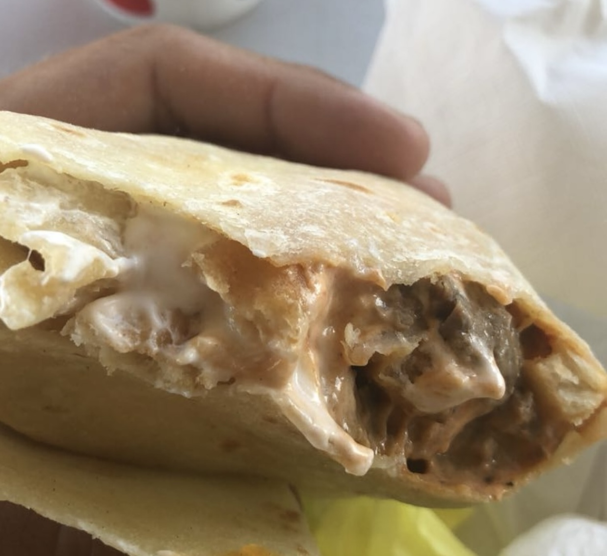

Hi, I'm Justin Mucherino, a sophomore at Harvard College. Up until a few months ago, I was chronically pre-med. But then I had a breakthrough, and I realized I don't hate myself that much. So, naturally, I pivoted to an equally masochistic path, engineering and philosophy, and, if the vibe is right, potentially law school.
Me and my brother in England this summer on an unauthorized side quest
I hail from Connecticut but have also spent a lot of time in San Diego, which means my personality is mostly SoCal, but my New England roots sneak through the cracks from time to time. I'm an avid surfer and deeply miss rolling out of bed and straight into the waves. If you've never surfed, I highly recommend it—there's truly nothing like catching your first wave and even less like dropping in on a double-over header and face-planting into a reef.
Daily Coronado vibes
I also have two dogs, Knox and River. Knox came first, and then we thought, hey, he needs a friend!—turns out, he did not. When we brought River home, Knox immediately fell on her, and their relationship has been on thin ice ever since. It's not his fault—he lives life at full throttle, which is honestly a mood.
In this dramatic reenactment of betrayal, witness River launching an unprovoked assault on Knox for the heinous crime of… existing. Meanwhile, Knox files an urgent appeal for immediate rescue.
Another core personality trait? Burritos. I am a hardcore burrito connoisseur. Right now, I'm on a noble and, so far, disappointing quest to find the best burrito in my general vicinity. Look, I don't care if your sign says "New England's Best Burritos"—I know the truth, and the truth is that I've had better gas station burritos in California. I digress.
Behold! A divine creation sent from the heavens.
Anyway, I'm pumped for PS 70, and I'm excited to make some cool things!